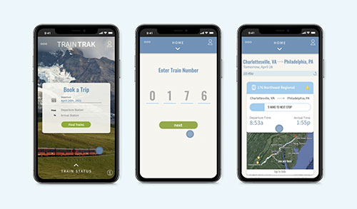

In this redesign, I learned the importance of microinteractions and the skills of creating signature features in mobile applications. I also learned how to use Adobe AfterEffects to bring those microinteractions to life. I chose to redesign one main task that the app provides in order to be able to focus on the smaller details that could possibly go unnoticed when working on a larger scale.
Amtrak is a passenger railroad service that provides travel all across the United States. With the Amtrak app users can get simple and intuitive access to all the travel information they will need, whenever they need it. The task that I decided to redesign is the ‘check status’ feature which allows users to easily access real-time updates on any train and its arrival times.
GETTING STARTED
Using Figma, I put together this task flow to demonstrate how the current train status function is organized. This diagram also highlights the microinteractions on each page.
The strongest piece of design in the train status task flow is the final result page. Once the search for a specific train is completed, a card appears informing the user of the location, train number, departure and arrival times, and any delays occurring. I believe the layout of this information is very easy to look at and comprehend, which is useful when travelers are in a hurry.
However, the train status task flow is weak in the way that users are forced to go through the search process every time they need to check their train status. This process is highly inefficient and frustrates the users who need quick access. An interaction that I think needs changing is also the search process itself. Currently, the search is a simple form where users enter their departure and arrival stations, departure date, train number, and then tap submit. While this is a fine solution, I thought it might be more intriguing to break up each data entry point into separate tasks to create a more interactive experience.
PLANNING
Rebranding

For the rebranding of the Amtrak app, I decided to stick with the same basic color palette that was originally put in place. Amtrak’s main color, blue, gives the users a feeling of trust and reliability which is essential for a travel app.
In terms of typography, the original font choices were desperate for some variety. I kept the main font, source sans pro, but added Oswald to use for larger headings.
Finally, I ended up renaming the app to TrainTrak as it is specific to the task of tracking the status of a train and it is still recognizable to the original name.